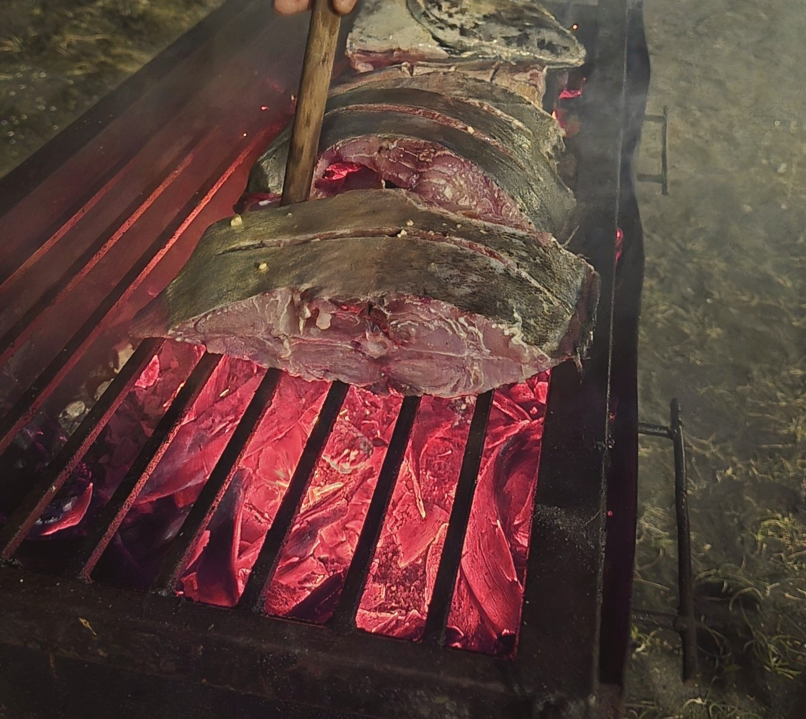
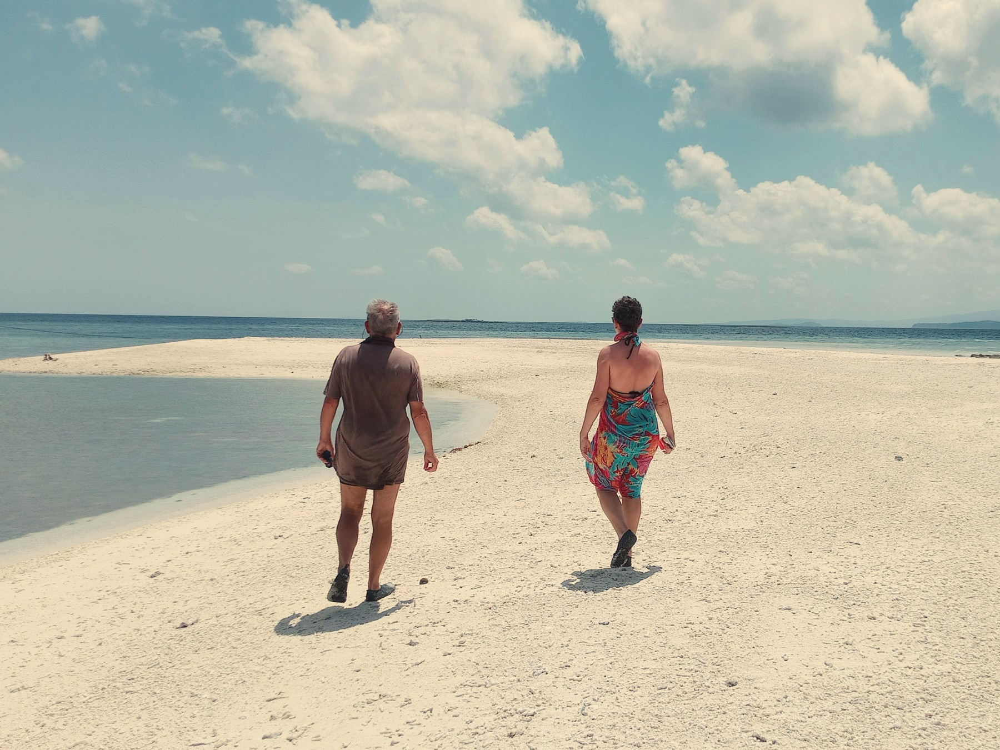
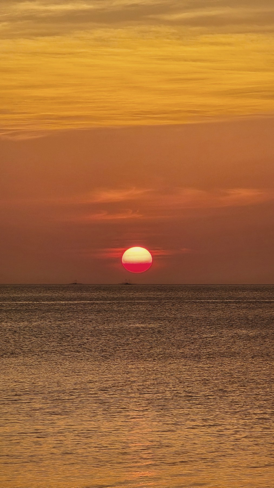

01 / 10
29 November 1605 — 2026
Selamat Hari Jadi
ke-421
Kabupaten Kepulauan Selayar
#HariJadiSelayar421

ke meja makan
02 / 10
Hari Jadi Selayar ke-421
Bangga pangan lokal
Tema tahun ini: “Pangan Lokal Mendukung Ketahanan Pangan Nasional”. Dari laut dan kebun Selayar, untuk Indonesia.

03 / 10
Hari Jadi Selayar ke-421
Laut yang memberi
Air toska, pasir putih, dan karang yang terjaga. Laut Selayar adalah rumah, sumber kehidupan, dan kebanggaan kita.

04 / 10
Hari Jadi Selayar ke-421
Taman bawah laut
Karang dan ikan warna-warni di perairan Selayar. Jaga bersama, wariskan untuk anak cucu.

Gusung

Polassi
05 / 10
Hari Jadi Selayar ke-421
Pulau-pulau yang memesona
Bahuluang, Gusung, Polassi, Tambolongan. Hanya sebagian kecil dari keindahan Kepulauan Selayar.

06 / 10
Hari Jadi Selayar ke-421
Daratan sesaat
Saat air surut, gosong pasir putih muncul di tengah laut. Keajaiban kecil dari pasang-surut Selayar.

07 / 10
Hari Jadi Selayar ke-421
Gua yang dibentuk laut
Gua Lipang di Pulau Bahuluang: stalaktit menggantung, lantai pasir putih, sejuk di dalam.

08 / 10
Hari Jadi Selayar ke-421
Senja di pesisir barat
Setiap sore matahari tenggelam di depan Pantai Sunari. Hadiah kecil dari Selayar untuk siapa saja yang singgah.

09 / 10
Hari Jadi Selayar ke-421
Malam yang tenang
Langit berbintang di antara pohon kelapa. Selayar mengajarkan kita untuk berjalan pelan.

29 November 2026
Selamat Hari Jadi
ke-421, Selayar
Dari tepi Pantai Sunari, kami turut merayakan 421 tahun Selayar. Semoga laut dan tanahnya terus memberi berkah untuk kita semua.
Keluarga besar SunaRi Beach Resort Selayar
#HariJadiSelayar421 · #sunarisunsetmoment